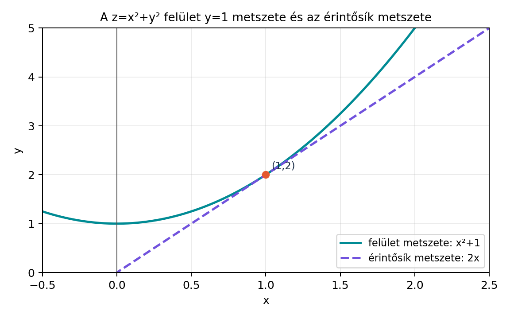

Egyváltozóban a derivált azt mondja meg, hogyan változik a függvény,
ha a változóját kicsit megmozdítjuk: a legjobb lineáris közelítés az
képlettel adódik. Több változó esetén a parciális deriváltak csak
tengelyirányú változásokat írnak le. A mérnöki és fizikai
gyakorlatban azonban a bemenő mennyiségek általában
egyszerre változnak: ha egy henger sugarát és
magasságát is méréssel határozzuk meg, mindkét mérési hiba egyszerre hat
a térfogatra, és a hibák nem egyszerűen „egymás után” adódnak, hanem
lineárisan összekapcsolódnak. Ezt a képet fogja meg a totális
derivált, amely a többváltozós függvény legjobb lineáris
közelítése, geometriailag pedig az érintősík.
22.2.2 Szemléletes kép
Tekintsük az
függvényt az
pontban. A parciális deriváltak itt
és
.
Az
tengely irányában az érintő meredeksége
,
az
tengely irányában szintén
.
A két érintő együttesen egy síkot feszít ki, és ez a sík a felülethez az
adott pontban hozzásimuló érintősík. Az alábbi ábra az
metszetben mutatja a felület grafikonját és az érintősík metszetét; a
teljes érintősík egyenlete
,
aminek az
metszete
.

A z=x²+y² felület y=1 metszete és az
érintősík metszete - Számított metszet: f(x,1)=x²+1; az érintősík z=2x.
Az x=1 pontban mindkettő értéke 2, és a meredekség is 2.
Az ábrán jól látszik, hogy az
pont közelében a két görbe közel van egymáshoz; az érintősík a felületet
első rendben, azaz a ponttól mért távolságnál gyorsabban eltűnő hibával
közelíti (itt a hiba pontosan a távolság négyzete,
).
22.2.3 A totális derivált
fogalma
A többváltozós derivált általános, pontos definíciójához a kis
-jelölést
használjuk, amelyet a Nagyságrendek és aszimptotikus
viselkedés: kis és nagy ordó alfejezetben vezettünk be. Azt mondjuk,
hogy a lineáris kifejezés pontosan akkor a legjobb lineáris közelítés,
ha a maradék a megváltozás hosszánál gyorsabban tart nullához.
Az alábbi ábra ezt nagyítással szemlélteti. Az
függvény
hibája az
körüli
oldalfelű négyzeten legfeljebb
,
így a hiba és
hányadosa
:
nagyításkor a felület az érintősíkhoz simul. A
(és
)
függvénynek mindkét parciális deriváltja
az origóban, a szintvonalképe azonban minden nagyításban ugyanaz,
,
ezért a hányados
.
Statikus változat (mint a PDF-ben)
Nagyítás: differenciálható és nem differenciálható eset
()
Definíció. Legyen
,
belső pont és
.
Az
függvény totálisan differenciálható az
pontban, ha létezik olyan
vektor, hogy
Ekkor az
vektort az
totális deriváltjának nevezzük, és
-val,
illetve
-val
jelöljük. Az
lineáris kifejezés a differenciál.
Kétváltozós esetben, ha
és
,
akkor a definíció alakja
A következő tétel összekapcsolja a totális deriváltat a már ismert
parciális deriváltakkal.
Tétel. Ha
totálisan differenciálható az
pontban, akkor
folytonos az
pontban;
parciálisan deriválható
-ban,
és
.
Bizonyítás. Az 1. állítás közvetlenül a definícióból
következik: ha
,
akkor
és az
maradék is
-hoz
tart, így
.
A 2. állításhoz vegyük a speciális
megváltozást. Ekkor a totális differenciálhatóság képlete:
Mivel
,
a különbségi hányados határértéke
,
tehát
létezik és egyenlő
-szel.
Hasonlóan,
választással kapjuk, hogy
.
∎
A tétel megfordítása nem igaz: abból, hogy a
parciális deriváltak léteznek, még nem következik a totális
differenciálhatóság, sőt még a folytonosság sem. Jó ellenpélda erre a
következő függvény.
Ellenpélda. Legyen
Az origóban a parciális deriváltak léteznek és nullával egyenlők:
és szimmetrikusan
.
Ugyanakkor a függvény az origóban nem folytonos: az
egyenes mentén
esetén
tehát a határérték nem nulla. Ezért az origóban a függvény nem is
lehet totálisan differenciálható, hiszen a differenciálhatóságból
következne a folytonosság.
A parciális deriváltak puszta létezése tehát nem elég. A gyakorlatban
a legfontosabb elégséges feltétel az, hogy a parciális deriváltak
folytonosak legyenek. Ennek a tételnek a bizonyításában az egyváltozós
Lagrange-féle középértéktételt használjuk, amelyet a Lagrange- és Cauchy-féle középértéktétel,
monotonitás alfejezetben bizonyítottunk.
Tétel. Legyen
és
.
Tegyük fel, hogy az
belső pont egy környezetében az
és
parciális deriváltak léteznek, és az
pontban folytonosak. Ekkor
totálisan differenciálható az
pontban.
Bizonyítási terv. A cél a
előállítás igazolása. A különbséget két lépésben bontjuk: először az
első változó mentén, majd a második mentén mozdulunk. Mindkét
részkülönbségre alkalmazzuk az egyváltozós Lagrange-tételt, így a
parciális deriváltak közbülső pontbeli értékei jelennek meg. Végül a
parciális deriváltak folytonossága miatt ezek a közbülső értékek közel
vannak az
pontbeli értékekhez, és a maradék
lesz.
Bizonyítás. Válasszunk olyan kicsi
-t,
hogy az
és
pontok, valamint az ezeket összekötő és az
–
szakasz is a kérdéses környezetben legyen (gömbi környezetnél, ha sugara
,
elég
).
Írjuk a teljes megváltozást két rész összegeként:
Az első zárójelben a második változó rögzített, az első változó pedig
-ról
-ra
változik. Az egyváltozós Lagrange-tétel szerint létezik
az
és
között, amelyre
A második zárójelben az első változó rögzített, a második változó
-ről
-ra
változik, így létezik
a
és
között, amelyre
Ezeket összevetve:
Ebből a bizonyítandó alakot úgy kapjuk, hogy kivonjuk és hozzáadjuk a
tagot:
A maradék abszolút értékét becsüljük a
háromszög-egyenlőtlenséggel:
Mivel
folytonos
-ban,
és
ha
,
az első együttható nullához tart. Hasonlóan a második együttható is
nullához tart. Így a maradékra
miatt a maradék osztva
-tel
nullához tart, azaz a maradék
.
Ezzel a totális differenciálhatóságot igazoltuk. ∎
Megjegyzés. Azokat a függvényeket, amelyek parciális
deriváltjai folytonosak,
-osztályúaknak
nevezzük. A tétel tehát röviden azt mondja:
-osztályú
függvény totálisan differenciálható.
22.2.5 Érintősík, linearizálás és
totális differenciál
A totális derivált geometriai jelentése az érintősík. Ha
totálisan differenciálható az
pontban, akkor a
felülethez az
pontban húzható érintősík egyenlete
Ezt a lineáris függvényt az
linearizálásának nevezzük:
A linearizálás a függvényértéket első rendben közelíti:
az
pont közelében. A közelítés hibája
.
A differenciál jelölésmódjával a fenti képlet tömörebben is írható.
Legyen
,
,
és
.
Ekkor a totális differenciál
és kis
,
megváltozásokra
.
Számolási recept — érintősík és linearizálás
Számítsd ki az
és
parciális deriváltakat.
Helyettesítsd be az
pontot:
,
és
.
Írd fel az érintősíkot:
.
Ha közelíteni akarsz, használd az
linearizáló függvényt.
Ellenőrizd, hogy a kapott közelítés dimenzióban és nagyságrendben
reális-e.
22.2.6 Kidolgozott példa:
linearizálás
Legyen
,
.
A parciális deriváltak:
Az adott pontban:
Az érintősík egyenlete tehát
Közelítsük ezzel a
értéket. Az
,
behelyettesítésével:
A pontos függvényérték:
A linearizálási hiba tehát
ami pontosan a megváltozás hosszának
()
négyzete:
.
A hiba tehát
-nál
sokkal kisebb: ez az első rendű közelítés.
22.2.7 Kidolgozott példa:
differenciálhatóság a definícióból
Mutassuk meg, hogy az
függvény az origóban totálisan differenciálható. Az origóban
,
továbbá
és
,
így a lineáris rész nulla. A definícióbeli maradék:
Meg kell mutatni, hogy ez
.
A számtani–mértani egyenlőtlenség miatt
ezért
Ez utóbbi nullához tart, ha
,
tehát a maradék valóban
.
Így
az origóban totálisan differenciálható, és
.
22.2.8 Valós életbeli alkalmazás:
mérési hibák terjedése
A totális differenciál a mérési hibák becslésének egyik leggyakoribb
eszköze. Ha egy
mennyiség több, hibával mért
mennyiségtől függ, akkor a hibák első rendben
lineárisan adódnak össze. A legrosszabb esetű abszolút hibakorlát:
A parciális deriváltak abszolút értékét azért szerepeltetjük, mert a
hibák előjelét általában nem ismerjük, és a legkedvezőtlenebb esetben a
hatások nem kioltják, hanem erősítik egymást.
Henger térfogatának hibája. Egy henger sugarát
-nek,
magasságát
-nek
mérik, a mérési hibák
és
.
A térfogat
Számítsuk ki a térfogatot és a hibakorlátot. Először a parciális
deriváltak:
A mérési pontban:
A térfogat:
A totális differenciál hibakorlátja:
A relatív hibakorlát:
azaz körülbelül
.
Érdemes megfigyelni a sugár hibájának nagyobb súlyát: a sugár
-os
relatív hibája a térfogatban
-ot
ad, a magasság
-os
hibája pedig
-ot,
így a teljes relatív hibakorlát
.
Ez azért van, mert a térfogat a sugárban négyzetesen, a
magasságban pedig csak lineárisan szerepel.
BMI-érzékenység. A testtömeg-index
,
ahol
a tömeg kilogrammban,
a magasság méterben. Legyen
és
.
A parciális deriváltak:
A mérési pontban:
A BMI értéke:
Az abszolút hibakorlát:
A becsült BMI tehát
,
a relatív hibakorlát pedig körülbelül
.
A lineáris hibaterjedési modell korlátja, hogy csak
kis mérési hibákra érvényes, és a parciális deriváltak
helyi értékét használja. Ha a függvény erősen nemlineáris, vagy a hibák
nagyok, a másodrendű tagokat is figyelembe kellene venni; erre a
többváltozós Taylor-formula ad eszközt a Jacobi-mátrix, Hesse-mátrix és többváltozós
Taylor-formula alfejezetben.
22.2.9 Tipikus hibák
A parciális deriváltak létezéséből totális
differenciálhatóságra következtetni. Az
típusú ellenpélda mutatja, hogy ez nem igaz: a parciális deriváltak
léteznek, de a függvény nem folytonos, így nem differenciálható. A
totális differenciálhatósághoz a parciális deriváltak folytonossága
elégséges, vagy a definícióbeli maradék-feltételt kell közvetlenül
ellenőrizni.
Az érintősík képletéből az
tag vagy az
tényező elhagyása. Gyakori hiba a
felírás, ami az origón átmenő síkot ad, és az
pontban általában nem érinti a felületet. A helyes alak
.
A hibaterjedésnél az abszolút értékek elhagyása.
Ha az egyik parciális derivált negatív, a tanulók néha tévesen azt
gondolják, hogy a hibák kioltják egymást. A mérési hibáknál a
legrosszabb esetet kell venni, ezért minden tag abszolút értékét
összegezzük.
A differenciál és a függvény megváltozásának
összekeverése. A
csak közelítőleg egyenlő
-fel,
és csak kis megváltozásokra érvényes. Nagy
,
esetén a linearizálási hiba jelentős lehet.
22.2.10 Önellenőrzés
Írd fel az
függvény érintősíkját az
pontban.
Igaz vagy hamis? Ha
és
léteznek egy pontban, akkor
ott totálisan differenciálható is. Indokold.
Igaz vagy hamis? Ha
totálisan differenciálható egy pontban, akkor ott folytonos is.
Mennyivel változik közelítőleg a
függvény, ha
-ről
-re,
-ról
-re
változik?
Egy henger sugarát
-kal,
magasságát
-kal
mérik. Mennyi a térfogat relatív hibájának közelítő korlátja?
Mit jelent a definícióban az
maradék?
22.2.11 Feladatok
1. feladat (A). Legyen
.
Számítsd ki
és
parciális deriváltakat, írd fel az érintősíkot a
pontban, és becsüld a linearizálással az
értéket.
2. feladat (A). Írd fel az
függvény totális differenciálját az
pontban.
3. feladat (B). A definíció alapján bizonyítsd be,
hogy az
függvény totálisan differenciálható az origóban.
4. feladat (B). Linearizáld az
függvényt a
pontban, és közelítsd a
értéket.
5. feladat (C). Bizonyítsd be a definícióból
kiindulva, hogy ha
totálisan differenciálható az
pontban, akkor folytonos is ott.
6. feladat (D). Egy kerékpárpumpa hengerének belső
sugarát
-nek,
a kamra hosszát
-nek
mérik, a hibák rendre
és
.
Becsüld a hengeres kamra térfogatának abszolút és relatív hibáját.
22.2.12 Megoldások
Önellenőrzés – válaszok
,
;
az
pontban
,
,
,
így az érintősík
.
Hamis. A parciális deriváltak létezéséből nem következik a totális
differenciálhatóság; ellenpélda az
függvény.
Igaz, a totális differenciálhatóságból következik a folytonosság,
mert a lineáris rész folytonos, a maradék pedig nullához tart.
;
a
pontban
,
tehát a függvény megváltozása körülbelül
.
,
így
;
a relatív hiba korlátja
.
Az
azt jelenti, hogy a maradék
-val
osztva nullához tart, tehát a lineáris közelítés hibája a megváltozásnál
gyorsabban tűnik el.
1. feladat megoldása. A parciális deriváltak:
A
pontban:
Az érintősík:
A linearizálás
,
esetén:
A pontos érték:
.
,
,
így
.
A közelítés hibája körülbelül
,
ami összhangban van a kis megváltozással.
2. feladat megoldása. A parciális deriváltak:
Az
pontban
,
,
így
3. feladat megoldása. Az origóban
,
,
,
tehát a lineáris rész nulla. A maradék:
Osztva
-tel:
tehát a maradék
,
így a függvény totálisan differenciálható az origóban.
4. feladat megoldása. Az
függvény parciális deriváltjai:
A
pontban
,
,
.
A linearizálás:
Tehát
.
A pontos érték
,
ami jól egyezik a lineáris közelítéssel.
5. feladat megoldása. Tegyük fel, hogy
totálisan differenciálható az
pontban. Ekkor valamely
vektorral
Ha
,
akkor a lineáris tag
,
mert a skaláris szorzat folytonos függvénye
-nak.
Az
definíció szerint szintén nullához tart. Ezért
ami éppen az
függvény
pontbeli folytonossága.
6. feladat megoldása. A térfogat
,
ahol
és
.
A parciális deriváltak:
Ez az alfejezet a klasszikus többváltozós kalkulus tankönyvi anyagára
épül, konkrét forráshivatkozást itt nem adtam meg. A felhasznált
állítások a könyv korábbi fejezeteiben bizonyított Lagrange-tételen és a
kis
-jelölésen
alapulnak; a valós alkalmazási számadatok szemléltető, kerekített
modellértékek.